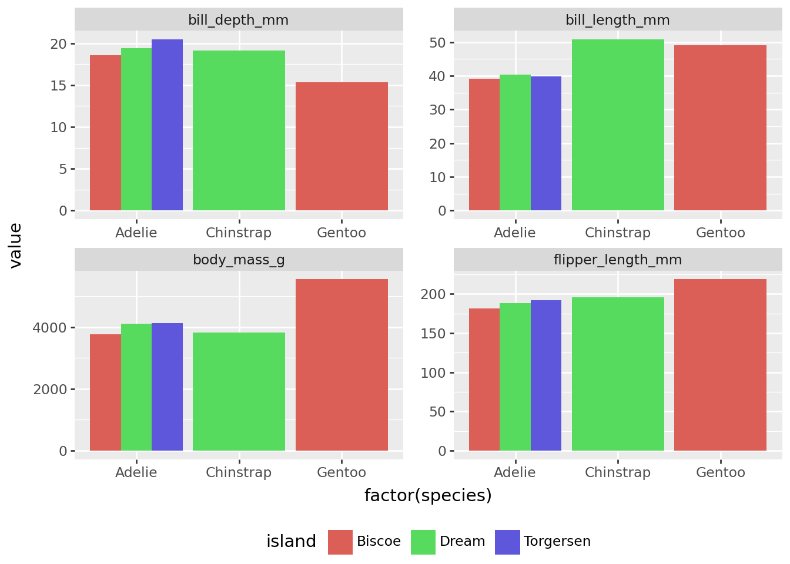

Code
import pandas as pd
import plotnine as pn
from matplotlib import rcParams
from IPython.display import display, Markdown
from great_tables import GT
import plotly.express as px
from palmerpenguins import load_penguinsWith Quarto & Python
December 5, 2024
I wanted to make a quick post about this topic because I could not find much online on this topic and it was something I realized I had not tried in Python. Below is the code for a parameterized report where I am filtering for data from the palmerpenguins package to only look at data from 2007. I decided on the palmerpenguins dataset because it is accessible and can showcase a simple for loop that renders a yearly report on penguin measurements.
The for loop script can be found here and the actual files created are showcased here. This example will only show the template that was used for the Quarto document. Also, as I was creating this I came across a wonderful video explaining a more in-depth example of looping through a couple of parameters for Quarto documents in Python (video here, Quarto document code here, for loop code here).
library(reticulate)
use_python("C:/Users/Jonathan/Documents/github_projects/JonathanAPedroza.com/blog/Scripts/python.exe") species island sex bill_length_mm bill_depth_mm \
0 Adelie Biscoe female 37.48 18.58
1 Adelie Biscoe male 39.16 18.30
2 Adelie Dream female 37.86 17.84
3 Adelie Dream male 40.38 19.43
4 Adelie Torgersen female 38.28 18.16
5 Adelie Torgersen male 39.90 20.49
6 Chinstrap Dream female 46.57 17.84
7 Chinstrap Dream male 50.88 19.13
8 Gentoo Biscoe female 45.06 13.99
9 Gentoo Biscoe male 49.00 15.36
flipper_length_mm body_mass_g
0 181.80 3470.00
1 181.60 3770.00
2 185.00 3269.44
3 188.60 4102.50
4 187.62 3475.00
5 192.29 4139.29
6 188.69 3569.23
7 196.15 3819.23
8 211.06 4618.75
9 218.88 5552.94
species island sex variable value
0 Adelie Biscoe female bill_length_mm 37.48
1 Adelie Biscoe male bill_length_mm 39.16
2 Adelie Dream female bill_length_mm 37.86
3 Adelie Dream male bill_length_mm 40.38
4 Adelie Torgersen female bill_length_mm 38.28
5 Adelie Torgersen male bill_length_mm 39.90
6 Chinstrap Dream female bill_length_mm 46.57
7 Chinstrap Dream male bill_length_mm 50.88
8 Gentoo Biscoe female bill_length_mm 45.06
9 Gentoo Biscoe male bill_length_mm 49.00
10 Adelie Biscoe female bill_depth_mm 18.58
11 Adelie Biscoe male bill_depth_mm 18.30
12 Adelie Dream female bill_depth_mm 17.84
13 Adelie Dream male bill_depth_mm 19.43
14 Adelie Torgersen female bill_depth_mm 18.16
15 Adelie Torgersen male bill_depth_mm 20.49
16 Chinstrap Dream female bill_depth_mm 17.84
17 Chinstrap Dream male bill_depth_mm 19.13
18 Gentoo Biscoe female bill_depth_mm 13.99
19 Gentoo Biscoe male bill_depth_mm 15.36
20 Adelie Biscoe female flipper_length_mm 181.80
21 Adelie Biscoe male flipper_length_mm 181.60
22 Adelie Dream female flipper_length_mm 185.00
23 Adelie Dream male flipper_length_mm 188.60
24 Adelie Torgersen female flipper_length_mm 187.62
25 Adelie Torgersen male flipper_length_mm 192.29
26 Chinstrap Dream female flipper_length_mm 188.69
27 Chinstrap Dream male flipper_length_mm 196.15
28 Gentoo Biscoe female flipper_length_mm 211.06
29 Gentoo Biscoe male flipper_length_mm 218.88
30 Adelie Biscoe female body_mass_g 3470.00
31 Adelie Biscoe male body_mass_g 3770.00
32 Adelie Dream female body_mass_g 3269.44
33 Adelie Dream male body_mass_g 4102.50
34 Adelie Torgersen female body_mass_g 3475.00
35 Adelie Torgersen male body_mass_g 4139.29
36 Chinstrap Dream female body_mass_g 3569.23
37 Chinstrap Dream male body_mass_g 3819.23
38 Gentoo Biscoe female body_mass_g 4618.75
39 Gentoo Biscoe male body_mass_g 5552.94
| species | island | sex | bill_length_mm | bill_depth_mm | flipper_length_mm | body_mass_g |
|---|---|---|---|---|---|---|
| Adelie | Biscoe | female | 37.48 | 18.58 | 181.8 | 3470.0 |
| Adelie | Biscoe | male | 39.16 | 18.3 | 181.6 | 3770.0 |
| Adelie | Dream | female | 37.86 | 17.84 | 185.0 | 3269.44 |
| Adelie | Dream | male | 40.38 | 19.43 | 188.6 | 4102.5 |
| Adelie | Torgersen | female | 38.28 | 18.16 | 187.62 | 3475.0 |
| Adelie | Torgersen | male | 39.9 | 20.49 | 192.29 | 4139.29 |
| Chinstrap | Dream | female | 46.57 | 17.84 | 188.69 | 3569.23 |
| Chinstrap | Dream | male | 50.88 | 19.13 | 196.15 | 3819.23 |
| Gentoo | Biscoe | female | 45.06 | 13.99 | 211.06 | 4618.75 |
| Gentoo | Biscoe | male | 49.0 | 15.36 | 218.88 | 5552.94 |